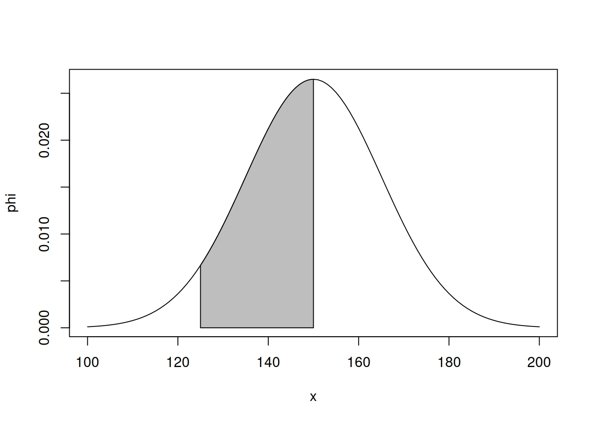
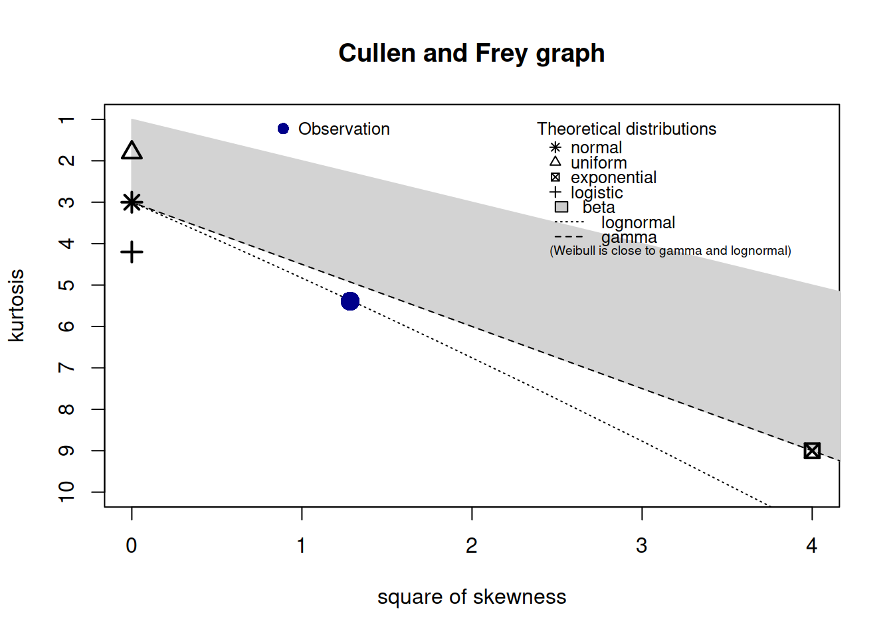
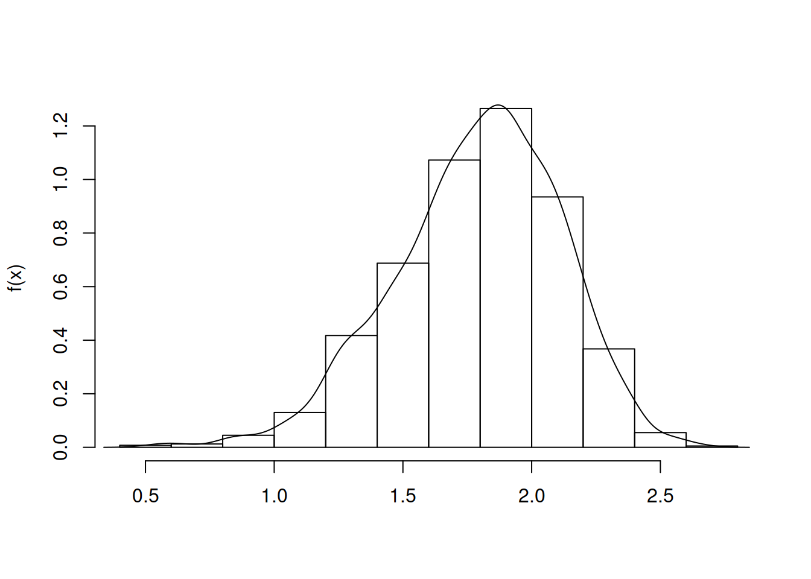
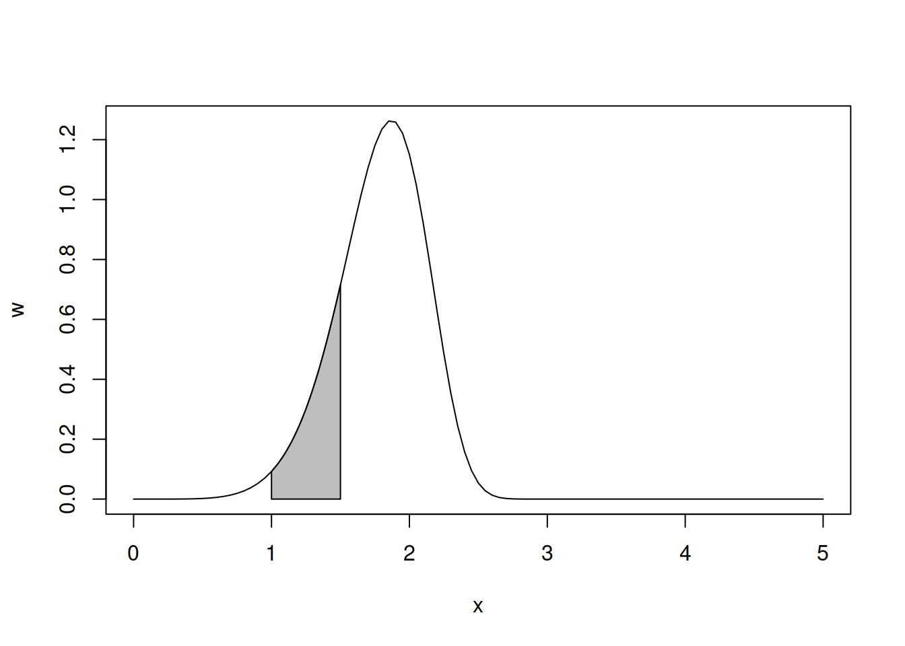

dados <- c(149.3355, 140.3779, 145.7254, 149.8931, 139.6168, 149.1934, 129.6147, 134.7523, 167.8030, 171.7407, 157.5422, 160.2664, 155.4553, 142.5989, 134.9844, 148.5172, 163.1447, 131.0138, 130.2423, 167.2239, 149.4015, 145.6802, 160.3472, 121.1775, 136.7295, 162.2381, 150.7192, 117.8144, 137.3630, 158.6373, 168.0833, 133.9263, 150.9102, 149.4811, 167.4367, 178.0970, 138.4903, 148.6764, 181.0990, 167.3345, 147.0679, 156.1410, 148.8734, 140.9484, 147.6408, 134.5726, 184.6812, 134.6648, 146.8130, 167.4161)
z.dados <- scale(dados)Probabilidade e Estatística - QUIZ 5

Instituto Tecnológico de Aeronáutica
Professor: Mauri Aparecido de Oliveira
Aluno: Alexandre A. A. M. de Abreu
1. Distribuição Normal
A amostra de dados para realização dos testes de normalidade é apresentada a seguir:
a) Testes de Normalidade
- Kolmogorov-Smirnov
ks.test(z.dados, "pnorm", 0, 1)
One-sample Kolmogorov-Smirnov test
data: z.dados
D = 0.1167, p-value = 0.4688
alternative hypothesis: two-sided- Shapiro-Wilk
shapiro.test(dados)
Shapiro-Wilk normality test
data: dados
W = 0.98185, p-value = 0.6324- Anderson-Darlin
library(nortest)
ad.test(dados)
Anderson-Darling normality test
data: dados
A = 0.37902, p-value = 0.3928- Lilliefors
lillie.test(dados)
Lilliefors (Kolmogorov-Smirnov) normality test
data: dados
D = 0.1167, p-value = 0.08619Interpretação dos resultados:
Considerando um nível de significância de 5%, não rejeitamos a hipótese de que os dados seguem a distrição normal, pois os p-valores são todos maiores do que 0,05.
b) Probabilidade de que uma chamada demore entre 125 e 150 segundos.
media <- 150
sigma <- 15
z1 <- (125 - media) / sigma
z2 <- (150 - media) / sigma
probabilidade <- pnorm(z2) - pnorm(z1)
probabilidade[1] 0.4522096phi <- function(x, mi = 0, sigma = 1) {
(1/(sigma*sqrt(2*pi))) *exp((-1/2)*((x-mi)/sigma)^2)
}
x = c(z1, seq(z1, z2, l=100), z2)
y = c(0, phi(seq(z1, z2, l=100)), 0)
plot(phi, -5, 5)
polygon(x = x, y = y, col="gray")
c) Probabilidade de que uma chamada demore menos de 125 segundos.
z1 <- (125 - media) / sigma
probabilidade <- pnorm(z1)
probabilidade[1] 0.04779035x = c(-5, seq(-5, z1, l=100), z1)
y = c(0, phi(seq(-5, z1, l=100)), 0)
plot(phi, -5, 5)
polygon(x = x, y = y, col="gray")
d) Probabilidade de que uma chamada demore entre 145 e 155 segundos.
media <- 150
sigma <- 15
z1 <- (145 - media) / sigma
z2 <- (155 - media) / sigma
probabilidade <- pnorm(z2) - pnorm(z1)
probabilidade[1] 0.2611173phi <- function(x, mi = 0, sigma = 1) {
(1/(sigma*sqrt(2*pi))) *exp((-1/2)*((x-mi)/sigma)^2)
}
x = c(z1, seq(z1, z2, l=100), z2)
y = c(0, phi(seq(z1, z2, l=100)), 0)
plot(phi, -5, 5)
polygon(x = x, y = y, col="gray")
e) Probabilidade de que uma chamada demore entre 160 e 165 segundos.
media <- 150
sigma <- 15
z1 <- (160 - media) / sigma
z2 <- (165 - media) / sigma
probabilidade <- pnorm(z2) - pnorm(z1)
probabilidade[1] 0.09383728phi <- function(x, mi = 0, sigma = 1) {
(1/(sigma*sqrt(2*pi))) *exp((-1/2)*((x-mi)/sigma)^2)
}
x = c(z1, seq(z1, z2, l=100), z2)
y = c(0, phi(seq(z1, z2, l=100)), 0)
plot(phi, -5, 5)
polygon(x = x, y = y, col="gray")2. Identificação de distribuição
Dados de uma variável aleatória X:
dados <- c(1.9993382, 1.4414849, 2.1477166, 2.1087828, 2.1342892, 2.1844835, 1.5091879, 2.0467623, 1.0642741, 2.1302612, 1.8389897, 1.8924614, 1.9316041, 1.5602204, 1.6991884, 1.7228081, 1.5197833, 1.7659242, 0.6914335, 1.4598759, 2.0017607, 1.5139209, 1.8334780, 1.8847480, 1.9072389, 1.6294414, 1.9068617, 1.7744973, 2.4300455, 1.8958270)a) Faça a identificação da distribuição.
Pelo diagrama de Cullen e Frei, os dados parecem seguir uma distribuição Lognormal ou Weibull.
library(fitdistrplus)
library(logspline)
descdist(dados, discrete = FALSE)
summary statistics
------
min: 0.6914335 max: 2.430045
median: 1.861869
mean: 1.787556
estimated sd: 0.3498879
estimated skewness: -1.133072
estimated kurtosis: 5.391445 Os gráficos de ajuste de distribuição, dão indícios de que a distribuição Weibull é a que melhor se ajusta aos dados.
dados_norm <- (dados - min(dados))/(max(dados) - min(dados))
weibull <- fitdist(dados, "weibull")
gamma <- fitdist(dados, "gamma")
lognormal <- fitdist(dados, "lnorm")
normal <- fitdist(dados, "norm")
beta <- fitdist(dados_norm, "beta", method = "mme")plot(weibull)plot(gamma)plot(lognormal)plot(normal)O Critério de Informacao de Akaike (AIC) confirma que a distribuição Weibull é a que melhor se ajusta aos dados.
cat(weibull$aic, gamma$aic, lognormal$aic, normal$aic, beta$aic)21.97718 31.70725 36.1033 25.11073 Infb) Compare os resultados gerados pelo teste de Kolmogorov-Smirnov considerando as distribuições Gama, Lognormal e Weibull.
mle <- fitdist(dados, "gamma", method="mle")
summary(mle)Fitting of the distribution ' gamma ' by maximum likelihood
Parameters :
estimate Std. Error
shape 20.98456 5.375681
rate 11.73920 3.043447
Loglikelihood: -13.85363 AIC: 31.70725 BIC: 34.50965
Correlation matrix:
shape rate
shape 1.0000000 0.9881127
rate 0.9881127 1.0000000ks.test(dados, "pgamma", 20.98456, 11.73920, exact = FALSE)
One-sample Kolmogorov-Smirnov test
data: dados
D = 0.14176, p-value = 0.5829
alternative hypothesis: two-sidedmle <- fitdist(dados, "lnorm", method="mle")
summary(mle)Fitting of the distribution ' lnorm ' by maximum likelihood
Parameters :
estimate Std. Error
meanlog 0.5568348 0.04322583
sdlog 0.2367576 0.03056282
Loglikelihood: -16.05165 AIC: 36.1033 BIC: 38.90569
Correlation matrix:
meanlog sdlog
meanlog 1 0
sdlog 0 1ks.test(dados, "plnorm", meanlog=0.5568348, sdlog=0.2367576, exact=FALSE)
One-sample Kolmogorov-Smirnov test
data: dados
D = 0.15513, p-value = 0.4658
alternative hypothesis: two-sidedmle <- fitdist(dados, "weibull", method="mle")
summary(mle)Fitting of the distribution ' weibull ' by maximum likelihood
Parameters :
estimate Std. Error
shape 6.513198 0.94665004
scale 1.918411 0.05622354
Loglikelihood: -8.988588 AIC: 21.97718 BIC: 24.77957
Correlation matrix:
shape scale
shape 1.0000000 0.2919704
scale 0.2919704 1.0000000ks.test(dados, "pweibull", shape = 6.513198, scale = 1.918411, exact=FALSE)
One-sample Kolmogorov-Smirnov test
data: dados
D = 0.091733, p-value = 0.9624
alternative hypothesis: two-sidedTodos os testes apresentaram p-valores que não justificam rejeitar as respectivas hipóteses nulas. Entretanto, a escolha da função de distribuição que melhor ajusta os dados é a Weibull, pois além de apresentar p-valor = 0.9624, é a que obteve melhor Critério de Informacao de Akaike.
c) Plotar a função e o histograma para distribuição escolhida.
w_2_1 <- rweibull(2000, shape = 6.513198, scale = 1.918411)
hist(w_2_1, lwd = 1, ylab = "f(x)", xlab = "", freq = F, main = "")
lines(x = density(w_2_1))
d) Verifique se a área sob a curva estimada é igual a 1.
w <- function(x, alpha = 6.513198, beta = 1.918411) {(alpha/(beta^alpha))*(x^(alpha-1))*(exp(-(x/beta)^alpha))}
x <- seq(0, 5, by = .01)
area <- integrate(w, 0, 1000)
area1 with absolute error < 0.00012e) Para a distribuição escolhida, calcule a área gerada no intervalo [1; 1,5]. Plotar e destacar essa área.
a1 <- pweibull(1, shape = 6.513198, scale = 1.918411)
a2 <- pweibull(1.5, shape = 6.513198, scale = 1.918411)
probabilidade <- a2 - a1
probabilidade[1] 0.1681586a1 <- qweibull(a1, shape = 6.513198, scale = 1.918411)
a2 <- qweibull(a2, shape = 6.513198, scale = 1.918411)
x = c(a1, seq(a1, a2, l=100), a2)
y = c(0, w(seq(a1, a2, l=100)), 0)
hist(y)plot(w, 0, 5)
polygon(x = x, y = y, col="gray")